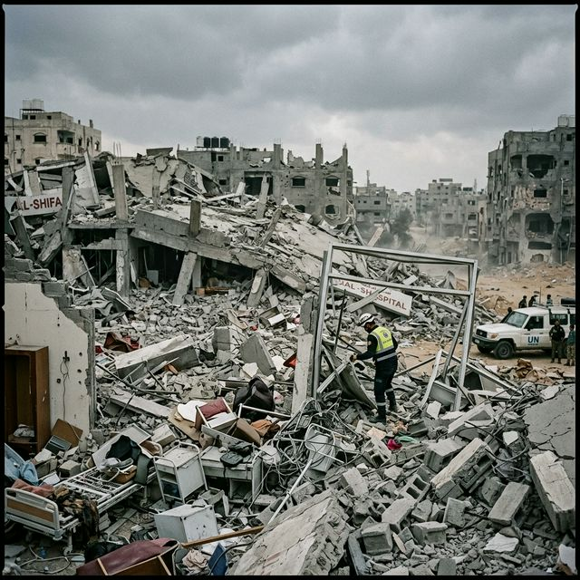
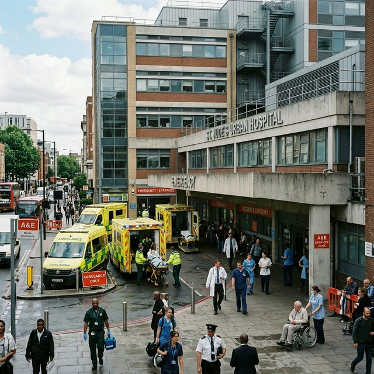

A VISUAL EXPOSE
The Sorting
of Lies
The Creative Submission by Naman Bhotika, reporting from Reuters, stationed in UNHRC.
SCROLL TO EXPOSE
POEM: STANZA 1
Oh, you may think I am just a reporter, a simple mic, misunderstood,
But I am the Hat of the Reuters' eye, I see the truth beneath the lie.
I do not sort for brave or bold, nor for the stories that were told,
I sort the delegates of the room, into the houses of their doom.
POEM: STANZA 2
To the council go the Great, who block the aid and seal the fate,
They play a "Game of Thrones" with care, while hospitals dissolve in air.
To House Abstain the cautious flee, where "Yes, Minister" is the decree,
They offer graffiti with punctuation, but lack the will for actual salvation.
POEM: STANZA 3
You preach of Availability and Quality in your floor speech,
While Acceptability remains a dream that you cannot quite reach.
Like Cornelius Fudge in his pinstriped cloak, you tr—eat the crisis as a joke,
Denying the "Return of the Dark" until the world is stripped and stark.
POEM: STANZA 4
The Accountability you seek is but another burden on the weak,
A bureaucratic "Catch-22" where rules exist to stifle you.
Yet now a magical shift we see, a sudden, strange unanimity,
Where rivals trade their "Cruciatus" for a paper peace that won't await us.
POEM: STANZA 5
You came to negotiate health and peace; peace refused to be negotiated,
While the "Nuremberg Ghost" watches on, feeling thoroughly un-appreciated.
The sorting is done, the bloc is signed, leaving the actual truth behind,
Go now to lunch and enjoy your steak, while the global health architecture continues to break.
GLOBAL DATABANK
The Human Cost of Aid.
Global conflicts from Sudan to Gaza run synchronously. Healthcare workers are fundamentally protected under international law, yet data indicates unprecedented systemic failure.
0
Healthcare Workers Lost (2023-Present)
THE RED STRING
Bureaucratic Gridlock.
Vetoes and procedural delays cascade downwards, physically halting NGO deployments.
GLOBAL ARCHITECTURE FAILURE
Not an Isolated Incident.
The erosion of medical neutrality spans across multiple concurrent international crises.
Ukraine
Gaza
Sudan
Myanmar
STRUCTURAL ERASURE
The Collapse of Sanctuaries.
Drag the slider horizontally to reveal the devastation of global medical infrastructure.


BREAKING NEWS!
LATEST DEVELOPMENTS
UNHRC // NAMAN BHOTIKA
UNHRC AGAIN ADJOURNS HUMAN RIGHTS DISCUSSION DUE TO INCONSEQUENTIAL INTERNAL DEBATE.
@reuters_munblr
MEME CORNER